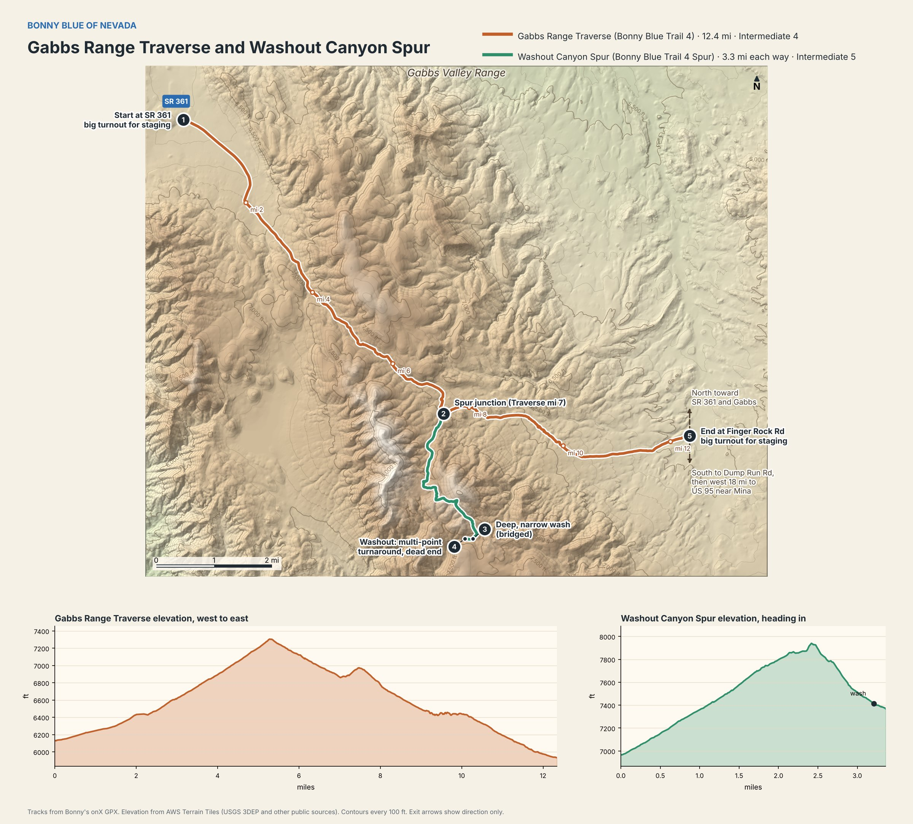

Trips
SR 839 to Finger Rock Road
We left US 50 between Fallon and Middlegate heading south on SR 839. About 15 miles in, we took the Old Cabin Squeeze (Bonny Blue Trail 3) bump-out: roughly 4 miles of narrow two-track east of the highway, tight enough in places that we needed a ground guide, before it dropped us back on SR 839. It was our first time out in a full-width vehicle, so we learned that limit on the fly.
From there it was another 1.2 miles south to where the pavement ended, and so too did the official SR 839. Keeping slightly left (southeast) to stay on Ryan Canyon Road for 9.4 miles brought us to what some maps show as the Deadhorse Wells town site.
We again stayed left (southeast) onto Rabbit Springs Road, 26 miles to SR 361, then about 7 miles north on 361 to the start of Gabbs Range Traverse (Bonny Blue Trail 4).
From SR 361, the Traverse cuts east through the Gabbs Valley Range for 12 miles to Finger Rock Road. About 7 miles in, Washout Canyon Spur (Bonny Blue Trail 4 Spur) climbs, then drops into a canyon over 3.3 miles south. We'd planned to exit through that canyon, which we got through a few years ago in a smaller vehicle. It has since washed out, and as of October 2026 full-size 4x4s can't get through, so we turned around and went back to the Traverse.
Where the Traverse ends at Finger Rock Road, you have options. North takes you back toward SR 361 and Gabbs. South, a few miles on, Finger Rock Road meets Dump Run Road. Turn west there to stay on maintained dirt to US 95 near Mina. That's how we got out, 18 miles from the end of the trail. Turn east instead for Gabbs Pole Line Road, the longest way out.
We turned off US 50 onto SR 839 right where the 1861 Trail passes. It's one of the Nevada Offroad Association's Battle Born Trail System routes, and we didn't know about it at the time, so it's on the list for next time. The way out toward Mina also comes close to their Battle Born Trail.
Find all three on onX, posted by Bonny Blue of Nevada: Old Cabin Squeeze, Gabbs Range Traverse and Washout Canyon Spur.



Arizona Peace Trail
A roughly 675-mile loop of mostly BLM backcountry through western Arizona. The plan is to drive it in daily sections over a few days, stopping in towns like Oatman, Lake Havasu City and Quartzsite. Trip report to follow.